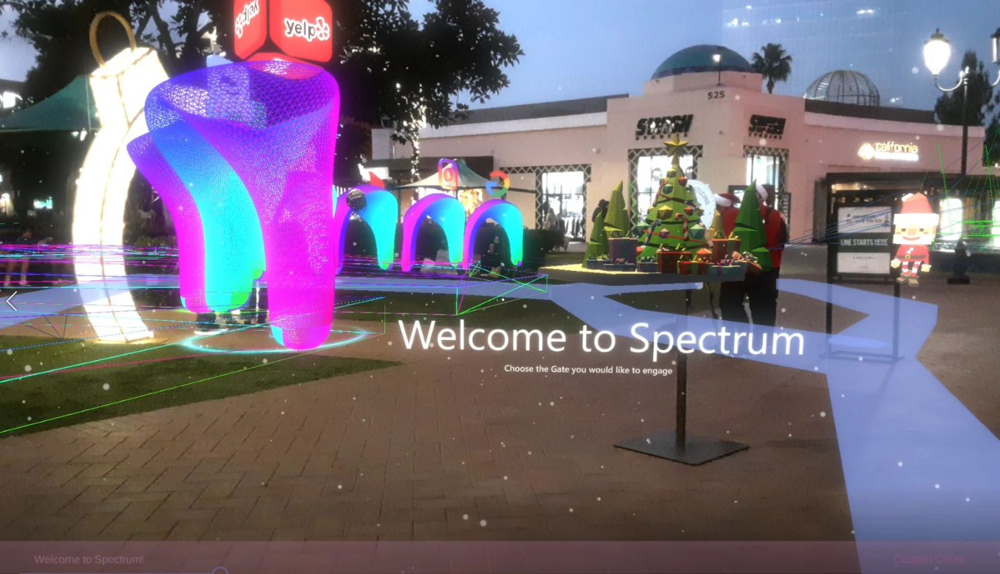
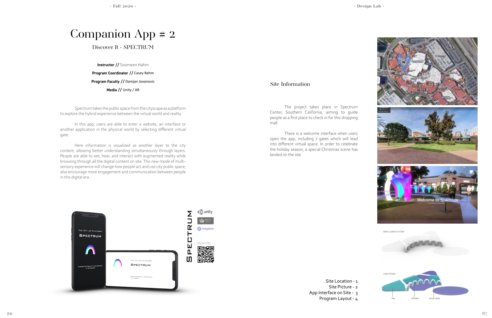
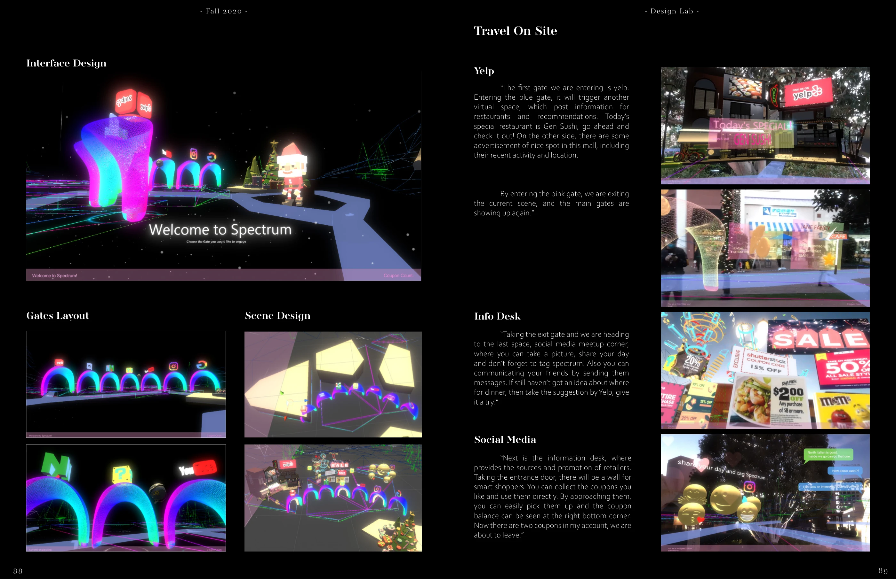

Augmented reality · Interaction / 2020
Spectrum
An augmented-reality companion app that turns public space into an interface for discovering information, places, and people.
SCI-Arc Design Lab, Fall 2020 · Instructor: Soomeen Hahm · Program coordinator: Casey Rehm · Program faculty: Damjan Jovanovic
Unity · Augmented reality

01
The city as an interface
Developed for Spectrum Center in Southern California, the app presents seven virtual gates over the physical site. Each gate leads to a different layer of digital content.

02
Enter, explore, return
The interaction journey moves through restaurant recommendations, retail information and coupons, and a social meetup space. Gates provide entry and return points between these experiences.
